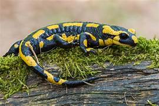

La salamandra común (Salamandra salamandra) es una especie de anfibio urodelo de la familia Salamandridae. Es el más común de los urodelos en Europa. De hábitos terrestres, únicamente entra en el agua para parir, y muchas subespecies lo hacen en tierra. Durante la fase larvaria respiran a través de branquias, y ya como adultas, la mayor parte de la respiración la realizan a través de la piel, debido a que poseen unos pulmones muy poco desarrollados, y es necesario que esta esté húmeda para poder respirar a través de ella.[2] Es un urodelo inconfundible, de fondo negro y manchas variadas amarillas muy intensas que pueden llegar a cubrir la casi totalidad del cuerpo. A veces también se aprecian manchas de color rojizo.